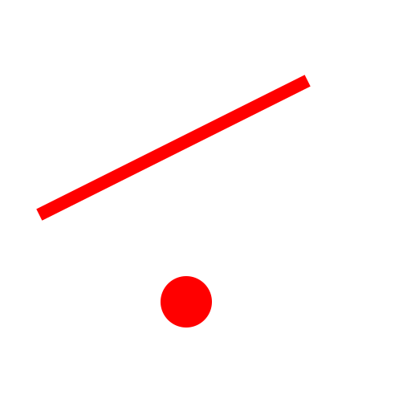
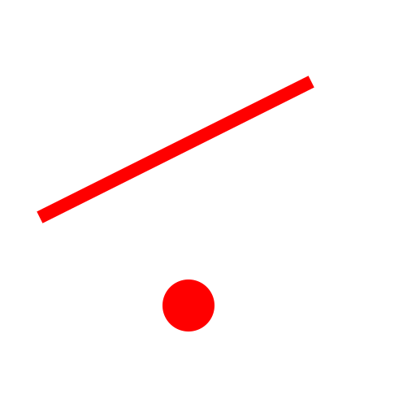
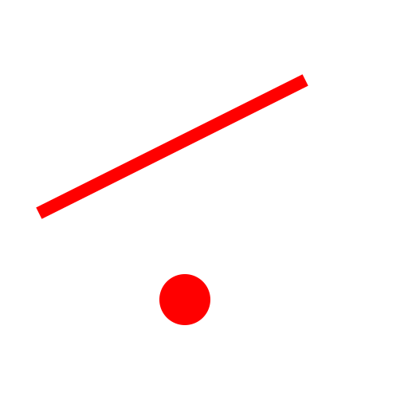

Menu: Risanje - Črta - Vzporedno (skozi točko)
Shortcut: L, G
Commands: lineparallelthrough | lineoffsetthrough | offsetthrough | parallelthrough | lg

Opis:
Z tem orodjem lahko ustvarite vzporednice obstoječim črtam ali kocentrične kroge in krožne loke. Vzporednica ali kocentrični krog oz lok se giblje skozi podano točko.